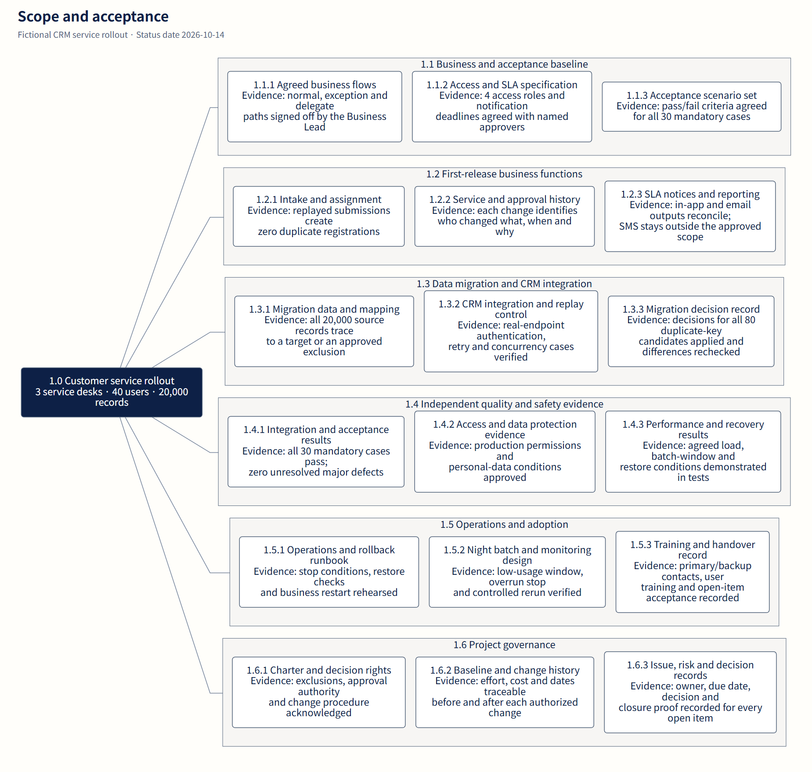
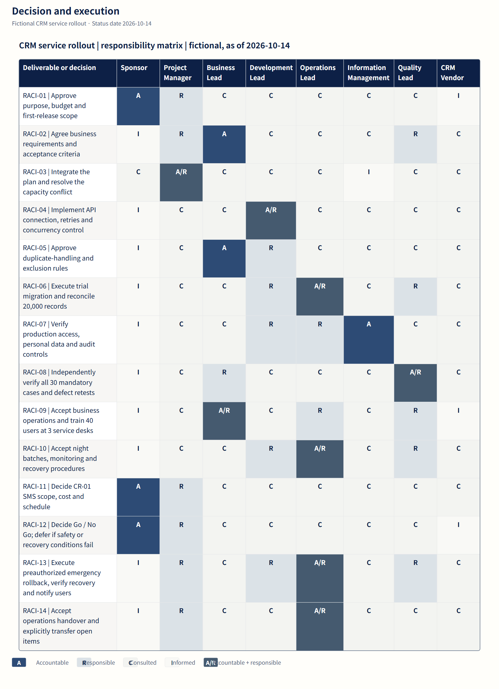
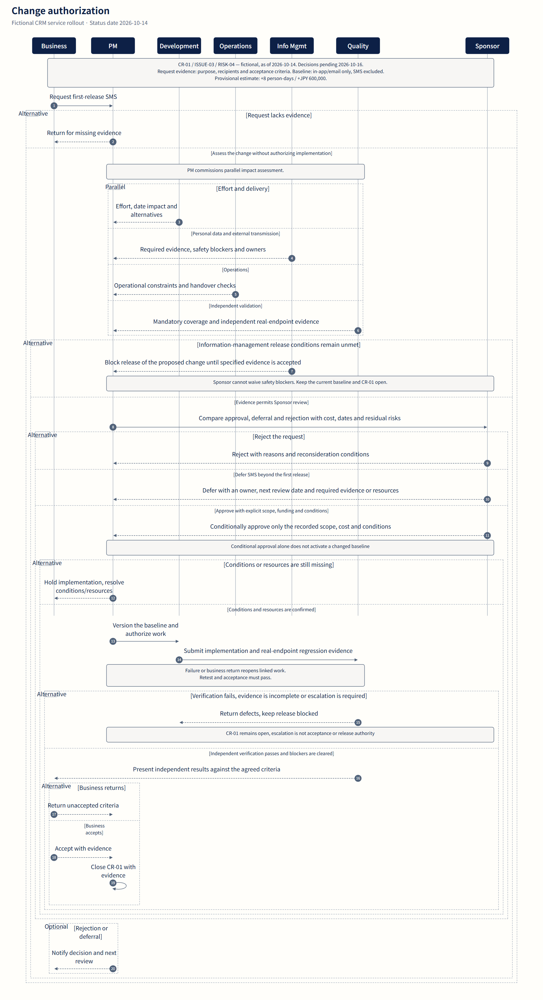
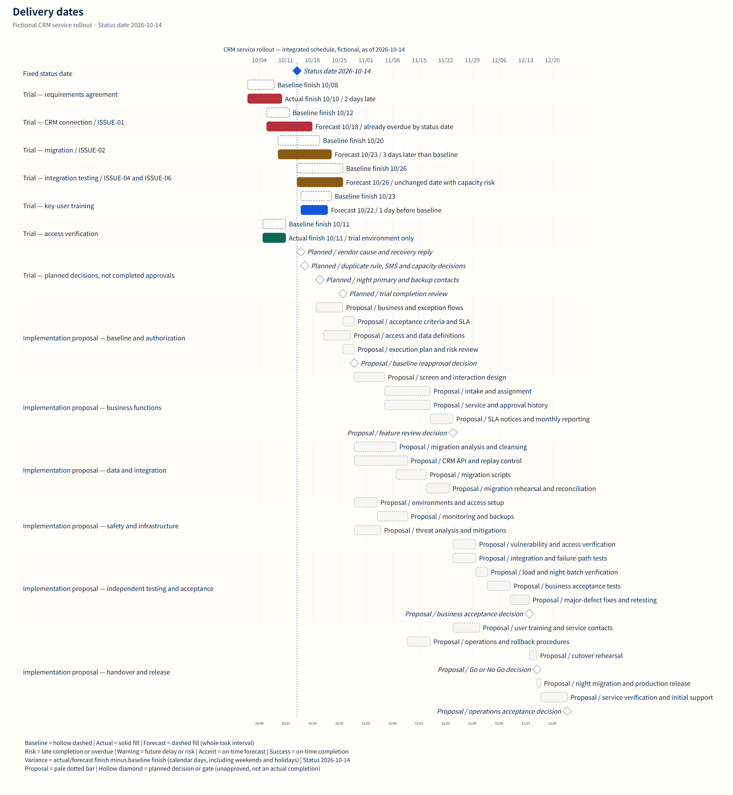

Scope and acceptance
Break scope into deliverables with explicit acceptance evidence.



Decision and execution
Make accountability, execution, consultation and information explicit.



Change authorization
Assess, authorize, independently verify and accept a change.



Delivery dates
Distinguish baselines, actuals, forecasts and unapproved proposals.
